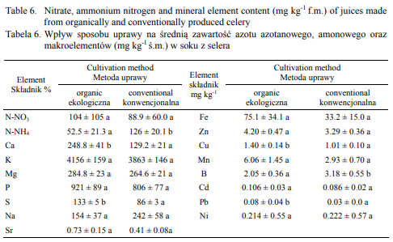

He buscat a Google acadèmic
He trobat un article escrit al (2009) que analitza si hi ha diferencies entre l'api cultivat normalment o de manera convencional. Aquest article diu que l'api ecològic te mes nutrients que l'Api convencional.
En la imatge d'adalt podem observar una taula comparativa de l'Api convencional i l'Api ecològic, en la que podem veure que l'Api ecològic es una mica millor que el convencional tenin mes polifenols. L'Api es ric en vitamines:A,B,C,K. Els compostos de mes nutrients son:284.8±41b, 133±5b, 4.20±0.47b, 0.08±0.04b.
Cultiu ecològic: En general, els cultius ecològics tendeixen a tenir nivells més alts de polifenols, ja que la planta està sotmesa a més estrès (per manca de pesticides químics i altres factors ambientals). Això podria teòricament incrementar lleugerament els nivells d'àcid clorogènic.
Cultiu convencional: El cultiu convencional, en canvi, podria tenir una menor concentració de polifenols com l'àcid clorogènic a causa de la menor necessitat de la planta de defensar-se contra plagues i altres factors externs gràcies a l'ús de pesticides i fertilitzants químics.
A continuació veuras un llistat amb diferents projectes que farem durant el curs: